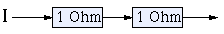
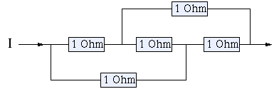
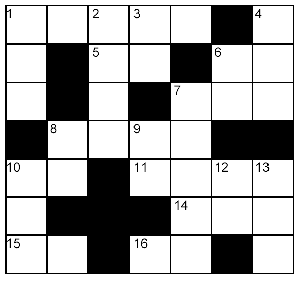
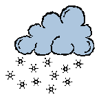

Klik hier om onze sponsor te bezoeken!
Moeilijkere Rekenproblemen
|

|
De puzzels zijn gemarkeerd met sterren ( ) die de moeilijkheidsgraad van de betreffende puzzle aangeven.
) die de moeilijkheidsgraad van de betreffende puzzle aangeven.
![[TERUG]](left.gif) terug naar de hoofd-puzzelpagina.
terug naar de hoofd-puzzelpagina.

i.
Staartdeling 
Gegeven is de volgende staartdeling:
. . 9 / 6 . 8 . . . \ . 5 3
. . . 2
-------
. 9 . .
. . 4 .
-------
. . 4 .
. . . .
-------
0
De Vraag:
Hoe ziet de volledige staartdeling er uit?
Het Antwoord:
 Klik hier!...
Klik hier!...
Nog een Vraag:
In de vermenigvuldiging hieronder, zijn vijf cijfers (en de logische drie nullen) gegeven:
6 . .
. . . ×
--------
. . .
. . . . 0
. 5 . 5 0 0 +
-------------
. . 5 . 4 .
Hoe ziet de volledige vermenigvuldiging er uit?
Nog een Antwoord:
Klik hier!...
![[OMHOOG]](back.gif) terug naar de index
terug naar de index
ii.
Faites Vos Jeux
Een bekende roulettetruc, om gegarandeerd winst te maken, is de volgende:
je zet voortdurend in op één kleur, bijvoorbeeld rood,
neemt bij verlies telkens een verdubbelde inzet voor de volgende ronde,
en stopt zodra je een keer wint.
Omdat je, als je wint, twee keer je inzet terugkrijgt en het balletje ooit wel
op rood zal vallen, weet je dat je je oorspronkelijke inzet aan winst gaat behalen
(je moet alleen wel oneindig veel geld hebben om je inzet telkens te verdubbelen als dat nodig is).
De verwachtingswaarde voor je winst is dus gelijk aan je oorspronkelijke inzet.
Maar stel nu dat er een maximale inzet geldt voor de roulette,
zodat je maar n achtereenvolgende keren kunt inzetten met deze truc.
De Vraag:
Wat is de verwachtingswaarde voor je winst voor deze begrensde roulette?
Een Hint:
Een roulettetafel heeft 37 vakjes: achttien rode, achttien zwarte en één groene.
Neem voor het gemak aan dat je je hele inzet kwijt bent als het balletje op groen valt
(Franse roulette en Amerikaanse roulette hebben verschillende regels voor wat er met de inzet
gebeurt in dit geval).
Het Antwoord:
Klik hier!...
terug naar de index

iii.
Mannen op de Maan
Een grote ruimtevaart organisatie heeft besloten om een basis op de maan te bouwen.
Voor dit doel moet er een kabel gelegd worden om de evenaar van de maan.
Wanneer de kabel gelegd is, blijkt deze 1 meter te kort te zijn.
In een snel belegde vergadering wordt besloten om te onderzoeken of er een mogelijkheid
is de hele kabel in een gleuf te leggen.
De Vraag:
Hoe diep zou deze gleuf moeten zijn om het tekort van 1 meter te overkomen?
Een Hint:
Neem aan dat de diameter van de maan 3476000 meter is.
Het Antwoord:
Klik hier!...
Nog een Vraag:
De directeur van de ruimtevaart organisatie besluit dat het graven van de gleuf
te duur is. Hij stelt voor de kabel gewoon een klein beetje ten noorden van de evenaar
te leggen.
Hoeveel meter ten noorden van de evenaar moet de kabel worden gelegd om het tekort van
1 meter op te lossen?
Nog een Antwoord:
Klik hier!...
terug naar de index
iv.
Het Goud van de Koning
Lang geleden leefde er een koning die zes zonen had.
De koning bezat veel goud, dat hij goed opgeborgen had in een gebouw dat bestond uit een
aantal kamers. In elke kamer bevond zich een aantal kisten; dit
aantal kisten was even groot als het aantal kamers in het gebouw. Elke kist
bevatte een aantal goudstukken gelijk aan het aantal kisten per kamer.
Toen de koning overleed, werd één kist vererfd aan de koninklijke
kapper. De rest van de goudstukken moest eerlijk verdeeld
worden over zijn zes zonen.
De Vraag:
Is een eerlijke verdeling in alle gevallen mogelijk?
Het Antwoord:
Klik hier!...
terug naar de index
v.
Vervangings Weerstand
Hier is een klein probleempje op electrotechnisch gebied.
Toch is slechts een beetje basis kennis van electrotechniek noodzakelijk, zoals:
- De vervangingsweerstand van twee serieel geschakelde weerstanden (van elk 1 Ohm)

is 2 Ohm (Rvervanging = R1 + R2, waar R1 = R2 = 1).
- De vervangingsweerstand van twee parallel geschakelde weerstanden (van elk 1 Ohm)

is 1/2 Ohm (1/Rvervanging = 1/R1 + 1/R2, waar R1 = R2 = 1).
De Vraag:
Wat is de vervangingsweerstand van onderstaande schakeling?

Een Hint:
Klik hier!...
Het Antwoord:
Klik hier!...
terug naar de index

vi.
Hangende Hoogspanningskabel
Een hoogspanningskabel, met een lengte van 16 meter, hangt
tussen twee hoogspanningsmasten van elk 15 meter hoog. De uiteinden van
de kabel zijn bevestigd aan de toppen van de masten. Op zijn laagste punt
hangt de kabel zeven meter boven de grond.
De Vraag:
Hoe ver staan de masten uit elkaar?
Het Antwoord:
Klik hier!...
terug naar de index
vii.
Hoekige Driehoek
We zoeken de kleinste (rechthoekige) driehoek waarvoor geldt:
- De lengtes van de zijden zijn gehele getallen.
- De omtrek is het kwadraat van een geheel getal.
- De oppervlakte is de derde macht van een geheel getal.
Om je op weg te helpen: de lengte van de schuine zijde is 240.
De Vraag:
Wat zijn de afmetingen van deze driehoek?
Het Antwoord:
Klik hier!...
terug naar de index
viii.
Babbelende Breuk
De breuk
EVE/DID = 0,TALKTALKTALKTALK...
is een gewone breuk die ook als repeterende tiendelige breuk
geschreven kan worden.
De Vraag:
Welke breuk is dit (gelijke letters zijn gelijke cijfers)?
Het Antwoord:
Klik hier!...
terug naar de index
ix.
Vier-Vergelijking
Er is een geheel getal n waarvoor het volgende geldt:
als je een 4 achter n zet, en het getal dat je op die manier
krijgt vermenigvuldigt met 4, dan is het resultaat gelijk aan het
getal dat je krijgt als je een 4 voor n zet.
Met andere woorden: we zoeken naar het getal dat je op de puntjes
in de volgende vergelijking kunt invullen:
4... = 4 × ...4
De Vraag:
Welk getal moet er op de puntjes worden ingevuld om de vergelijking
kloppend te maken?
Het Antwoord:
Klik hier!...
Nog een Vraag:
Als er een 6 in de vergelijking staat in plaats van een 4 (6... = 6 × ...6),
welk getal moet er dan op de puntjes worden ingevuld om de vergelijking
kloppend te maken?
Nog een Antwoord:
Klik hier!...
terug naar de index
x.
Pastoor Pietersen
In een cafeetje in een rustig dorpje voerden de waard en de plaatselijke
schoolleraar het volgende gesprek. De waard zei: "Pastoor Pietersen
heeft
vandaag bezoek gehad van drie vrouwen. Kan je erachter komen hoe
oud elk van deze drie vrouwen is, als je weet dat het product
van
hun leeftijden 2450 is, en dat ze samen net zo oud zijn als jij?" De
leraar
dacht een tijdje diep na en zei toen: "Nee, dat kan ik niet." Hierop zei
de waard: "Natuurlijk kan je dat niet, maar als ik je nu vertel dat de
oudste van de vrouwen ouder is dan pastoor Pietersen, dan kun je het
wel."
De Vraag:
Hoe oud is pastoor Pietersen?
Het Antwoord:
Klik hier!...
terug naar de index
xi.
Groen is 't Gras
Boer Gijs heeft een stuk grasland en drie dieren: een koe, een geit en een gans.
Gijs heeft het volgende ontdekt:
- Als de koe en de geit samen op het grasland grazen, is het gras na 45 dagen op.
- Als de koe en de gans samen op het grasland grazen, is het gras na 60 dagen op.
- Als de koe alleen op het grasland graast, is het gras na 90 dagen op.
- Als de geit en de gans samen op het grasland grazen, is het gras ook na 90 dagen op.
De Vraag:
Hoe lang kunnen de drie dieren samen grazen op het grasland?
Een Hint:
Klik hier!...
Het Antwoord:
Klik hier!...
terug naar de index

xii.
Dog's Mead
Het is het jaar 1939.
In het zuiden van Engeland staat de boerderij van de familie Dunk.
Bij deze boerderij hoort een rechthoekig stuk land met de naam Dog's Mead.
Het is de bedoeling om aan de hand van de onderstaande aanwijzingen
de kruiscijferpuzzel in te vullen.
In elk vakje van de kruiscijferpuzzel komt één cijfer (0-9) te staan
(en geen van de in te vullen getallen begint met een 0).
Horizontaal:
- De oppervlakte van Dog's Mead (in vierkante yards).
- De leeftijd van Martha, de tante van boer Dunk.
- Het verschil tussen de lengte en de breedte van Dog's Mead (in yards).
- Het aantal roeden in Dog's Mead vermenigvuldigd met 8 verticaal.
- Het jaar waarin de familie Dunk eigenaar werd van Dog's Mead.
- De leeftijd van boer Dunk.
- Het jaar waarin Mary geboren werd.
- De omtrek van Dog's Mead (in yards).
- De snelheid (in mijl per uur) waarmee boer Dunk wandelt, verheven tot de derde macht.
- 15 horizontaal min 9 verticaal.
Verticaal:
- De waarde van Dog's Mead (in shillings per roede).
- Het kwadraat van de leeftijd van de schoonmoeder van boer Dunk.
- De leeftijd van Mary, de dochter van boer Dunk.
- De waarde van Dog's Mead (in ponden).
- De leeftijd van Ted, de zoon van boer Dunk, die in 1945 twee keer zo oud zal zijn als zijn zus Mary
dan is.
- Het kwadraat van de breedte (in yards) van Dog's Mead.
- Het aantal minuten waarin boer Dunk 11/3 keer om Dog's Mead heen loopt.
- 10 verticaal gedeeld door 10 horizontaal.
- Zie 9 verticaal.
- De som van de cijfers van 10 verticaal plus 1.
- Het aantal jaren dat Dog's Mead al eigendom is van de familie Dunk.
De Vraag:
Hoe moet de kruiscijferpuzzel ingevuld worden?
Een Hint:
Omdat Engeland in 1939 nog niet was overgegaan op het metrische stelsel en de "decimale"
onderverdeling van de pond, worden in deze puzzel nog de "oude" Engelse rekeneenheden gebruikt:
1 roede = 1210 vierkante yards.
1 mijl = 1760 yards.
1 pond = 20 shilling.
Het Antwoord:
Klik hier!...
terug naar de index
xiii.
Vorm Vierentwintig
Met de getallen 1, 4, 5 en 6 moet het getal 24 gemaakt worden.
De spelregels zijn als volgt:
- Elk getal moet 1 keer gebruikt worden (en niet meer dan dat).
- De toegestane operaties zijn: plus, min, maal en delen.
- De getallen mogen niet samengesteld worden (bijvoorbeeld 1 en 4 gebruiken als 14).
- Haakjes zijn toegestaan.
De Vraag:
Geef de twee oplossingen die er zijn.
Het Antwoord:
Klik hier!...
terug naar de index
xiv.
Warrige Wijzers
Toen de Zwitsers nog niet zoveel ervaring hadden met
het maken van klokken, schijnt er eens een storende fout gemaakt te zijn
met een kerkklok. De klok werd officieel in
gebruik gesteld toen hij zes uur aanwees. Vervolgens bleek al snel dat
men de grote en de kleine wijzer verwisseld op de assen had gezet.
Het gevolg was dat de kleine wijzer ronddraaide met een twaalf keer zo
grote snelheid als de grote wijzer. Toen de klokkenmaker erbij
werd gehaald, deed zich een opmerkelijk feit voor: op het moment dat
hij de klok inspecteerde, gaf de klok weer precies de juiste tijd aan.
De Vraag:
Als de klok om zes uur in de juiste positie startte, wat was dan het eerste moment
dat hij weer de juiste tijd aangaf?
Een Hint:
Klik hier!...
Het Antwoord:
Klik hier!...
terug naar de index
xv.
Kranige Koerier
Een militaire colonne van 1 km lang loopt met
een constante snelheid van 6 km/uur. Een koerier
wordt op de fiets vanaf de staart naar de kop van de colonne gestuurd
om een boodschap over te brengen. Voor aangekomen keert hij
direct terug. Als hij weer terug bij de staart is, heeft
de colonne sinds zijn start 1 km afgelegd. De koerier
fietste steeds met constante snelheid.
De Vraag:
Hoe snel fietste de koerier?
Het Antwoord:
Klik hier!...
terug naar de index

xvi.
Smeltende Sneeuwballen
Afgelopen winter maakte iemand twee sneeuwballen, waarvan de ene een twee
keer zo grote diameter had als de andere.
Het weer werkte echter niet mee, en de sneeuwballen begonnen
dus al snel te smelten.
Het smelten vond alleen plaats aan het oppervlak van de ballen,
dus de snelheid waarmee een bal smolt was evenredig met de oppervlakte van
(het restant van) de bal.
De Vraag:
Toen van de grote sneeuwbal het halve volume was gesmolten,
hoeveel was er toen nog over van de kleine sneeuwbal?
Het Antwoord:
Klik hier!...
terug naar de index
xvii.
Vrijdag de Dertiende
Vrijdag de dertiende: een bekend begrip. Voor de één een dag om in bed te
blijven, voor de ander bijgeloof.
De Vraag:
Voor welke weekdag is nu de kans het
grootst dat de 13e van een willekeurige maand in een willekeurig
jaar op die weekdag valt? En hoe groot is die kans dan? Of maakt het
allemaal niets uit?
Een Hint:
Klik hier!...
Het Antwoord:
Klik hier!...
terug naar de index

Click Here to Visit our Sponsor
Copyright © 1996-2005. RJE-productions. All rights reserved.